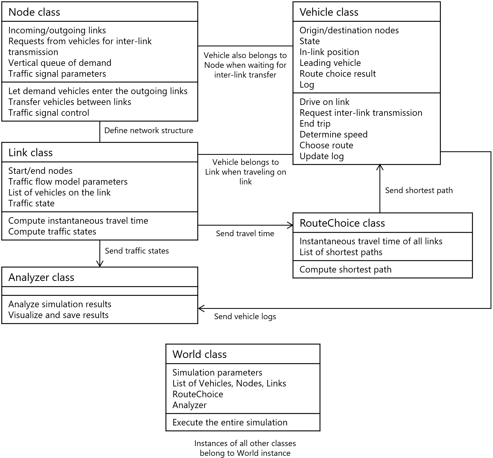

Simulation Mechanism¶
Models¶
UXsim computes network traffic flow dynamics by combining following models:
The mesoscopic version of Newell’s simplified car-following model (aka. X-model) for link and vehicle dynamics.
The mesoscopic version of the incremental node model for inter-link transfer at nodes.
Dynamic user optimum (aka. reactive assignment) with stochasticity and delay for route choice of travelers.
For the details, please refer to the original articles, arXiv preprint on UXsim, or Japanese textbook on traffic simulation.
Key Inputs¶
UXsim’s key inputs (i.e., simulation scenario parameters) are as follows:
Reaction time of vehicles (reaction_time argument of World). This value determines the simulation time step width. This is a global parameter.
Platoon size for mesoscopic simulation (deltan of World). This value determines the simulation time step width. This is a global parameter.
Route choice model parameters: shortest path update interval (duo_update_time of World) and weight value (duo_update_weight of World).
Lists of nodes and links. They define the network structure.
Parameters of each link. For example, length, free flow speed (free_flow_speed), number of lanes (number_of_lanes), jam density (jam_density), merging priority parameter (merge_priority), and traffic signal setting (signal_group).
Parameters of each node. For example, position (x and y) and traffic signal setting (signal).
Demand. For example, origin, destination, and departure time of each vehicle are specified.
Program Structure¶
Class diagram of UXsim: the relationship between classes and their key properties.
Computation Procedure¶
Activity diagram of UXsim: the overall computation procedure of UXsim.

Activity diagram of a specific vehicle in UXsim: the computation procedure for each vehicle.

The Details on Traffic Flow Model on Link¶
Traffic Flow Model¶
The link model follows a multi-lane, single-pipe approach where FIFO is guaranteed per link and no lane changing occurs.
Fundamental diagram parameters such as
free_flow_speed,jam_density(orjam_density_per_lane), andnumber_of_lanesdetermine the link’s flow characteristics. Reaction time of driversREACTION_TIMEis a global parameter.Real-time link status for external reference is maintained with attributes
speed,density,flow,num_vehicles, andnum_vehicles_queue.
Traffic Flow Model Parameters¶
- The following parameters are used in UXsim, defined through Link, World, and Node (*: input, **: alternative input).
*
free_flow_speed(m/s)*
jam_density(veh/m/LINK)**
jam_density_per_lane(veh/m/lane)*
lanes,number_of_lane(lane)tau: y-intercept of link FD (s/veh*LINK)REACTION_TIME(s/veh*lane)w(m/s)capacity(veh/s/LINK)capacity_per_lane(veh/s/lane)delta: minimum spacing (m/veh*LINK)delta_per_lane: minimum spacing in lane (m/veh*lane)q_star: capacity (veh/s/LINK)k_star: critical density (veh/s/LINK)*
capacity_in,capacity_out: bottleneck capacity at beginning/end of link (veh/s/LINK)*
Node.flow_capacity: node flow capacity (veh/s/LINK-LIKE)
If you are not familiar with the traffic flow theory, it is recommended that you adjust only
free_flow_speedandnumber_of_lanesfor the traffic flow model parameters, leaving the other parameters at their default values.
Capacity and Bottlenecks¶
The
capacity_outandcapacity_inparameters set the outflow and inflow capacities of the link. If not provided, the capacities are unlimited.These capacities can represent bottlenecks at the beginning or end of the link.
Connection to Node Model¶
At the downstream end of a sending link, vehicles in all lanes have the right to be sent out, but FIFO order is maintained.
At the upstream end of a receiving link, all lanes can accept vehicles.
Parameter Adjustments¶
Some traffic flow model parameters like
free_flow_speed,jam_density,capacity_out,capacity_in, andmerge_prioritycan be altered during simulation to reflect changing conditions.
Details on Multi-lane model¶
- Link model:
Multiple lanes with single-pipe model. FIFO is guaranteed per link. No lane changing.
Links have a
lanesattribute representing the number of lanes.Each vehicle has a
laneattribute.Each vehicle follows the leader vehicle in the same lane, i.e., the vehicle
lanessteps ahead on the link.
- Node model:
- Sending links:
Vehicles in all lanes at the downstream end of the link have the right to be sent out.
However, to ensure link FIFO, vehicles are tried to be sent out in the order they entered the link. If a vehicle cannot be accepted, the outflow from that link stops.
- Receiving links:
All lanes at the upstream end of the link can accept vehicles.